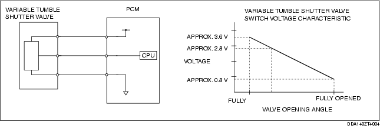

VARIABLE TUMBLE SHUTTER VALVE SWITCH OPERATION [ZY]
id0140001859c0
• Variable tumble shutter valve switch monitors the actual opening/closing of the variable tumble shutter valve by detecting the rotation angle of the variable tumble shutter valve actuator.
• The PCM performs optimized EGR control and ignition control according to the opening/closing of the valve.In addition, the PCM has a specification of approx. 20° from when the valve is fully closed (output voltage: approx. 2.8 V) to optimize the valve switching timing and engine control timing, and a valve operation angle of approx. 20° or less (output voltage: approx. 2.8 V or more) is determined as the closing area, and approx. 20° or more (output voltage: less than approx. 2.8 V) is determined as the opening area.
